Left: AA off. Right: the named method. Captured at 480 × 270 and enlarged with nearest-neighbor scaling. Click an image to see it full size.
The world and camera were fixed; clouds and particles were disabled. The starting and ending AA-off frames are pixel-identical. The MSAA 16× request used 8×. FXAA subpixel and TAA phase endpoints are controls, not ranked quality presets. FSR3 + FG screenshots show source frames. See capture notes.
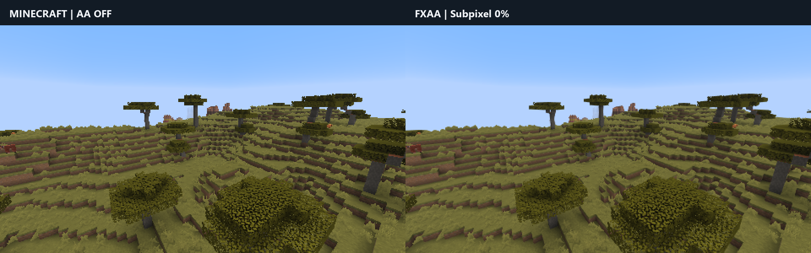
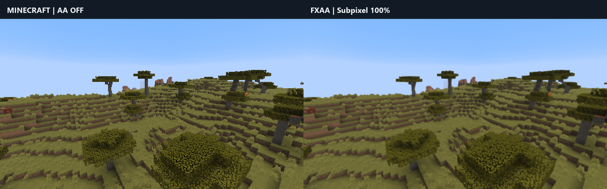
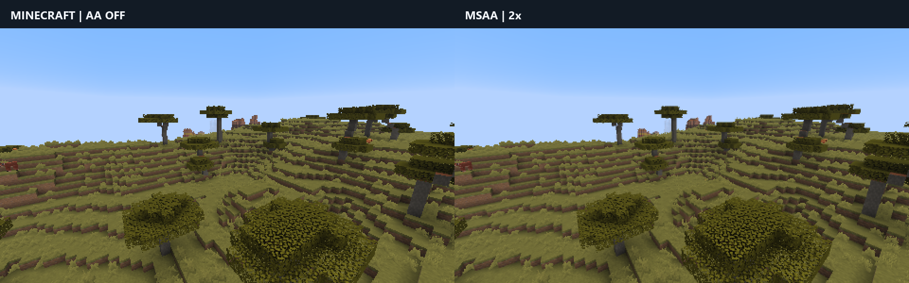
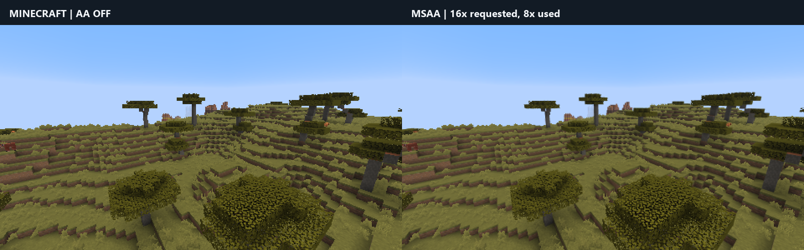
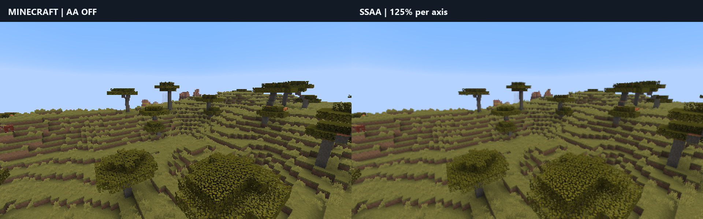
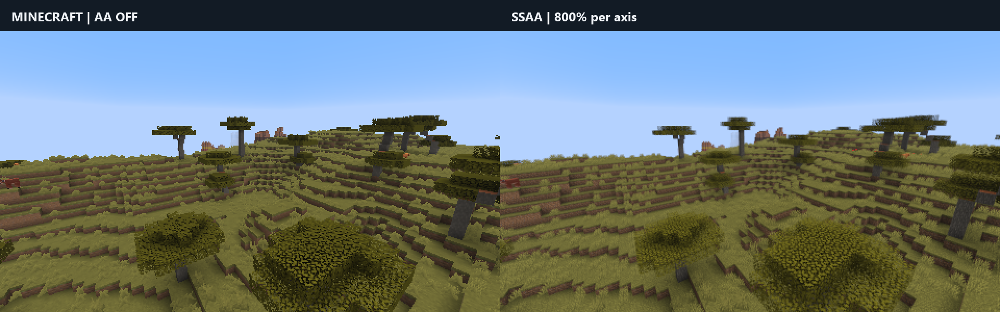
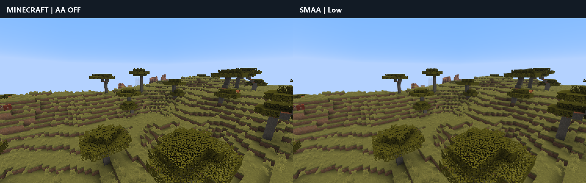
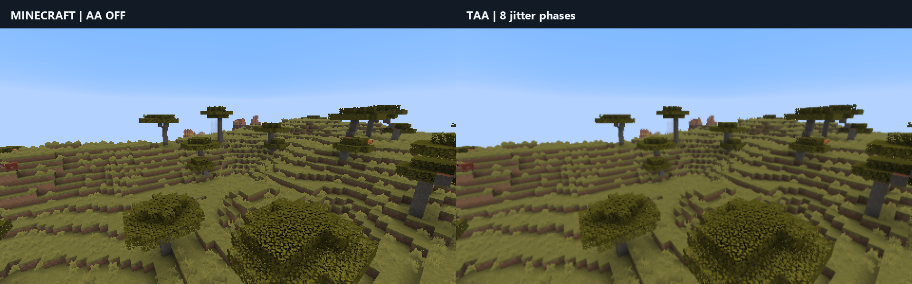
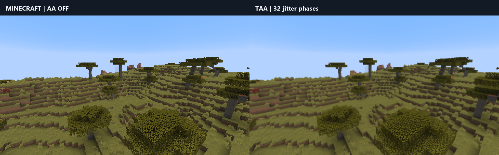
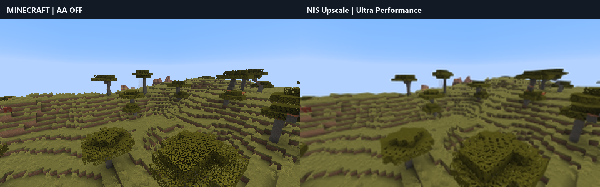
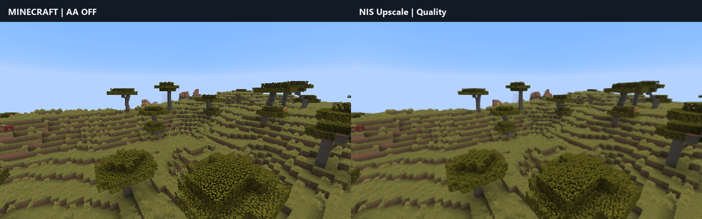
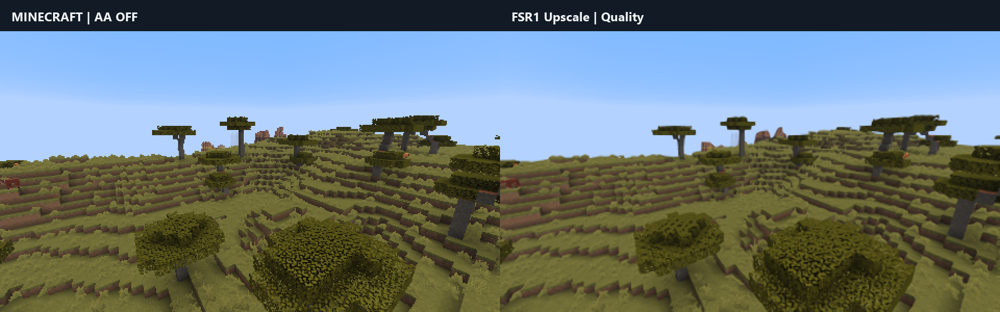
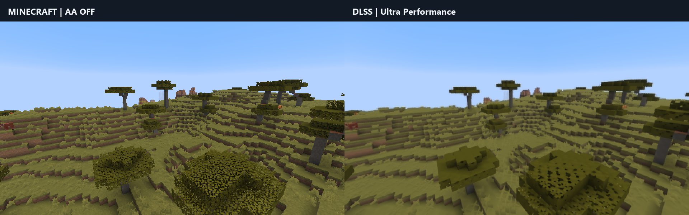
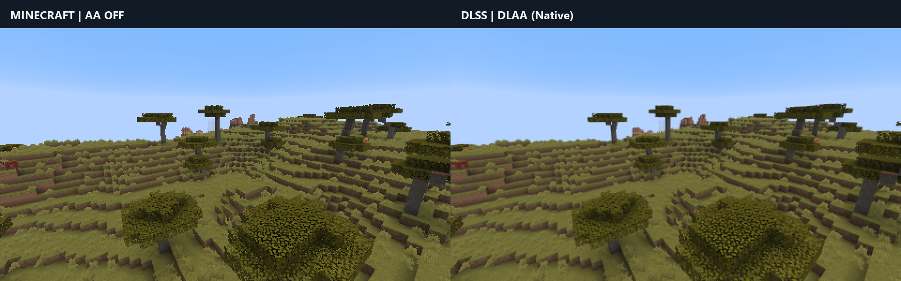
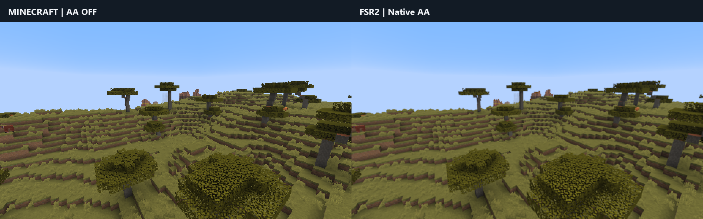
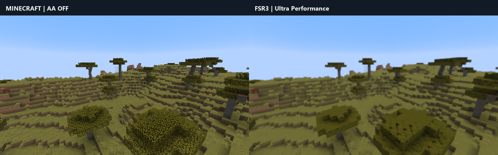
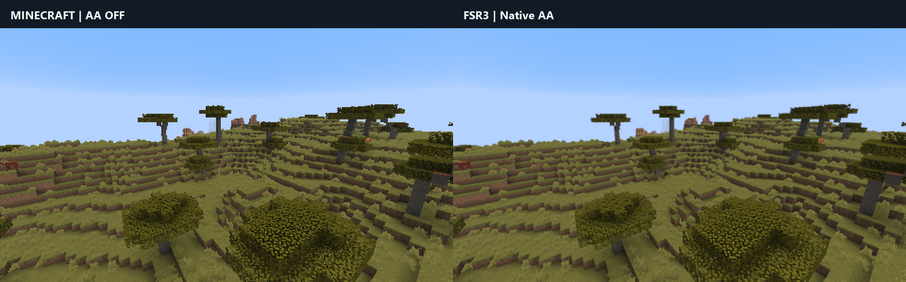
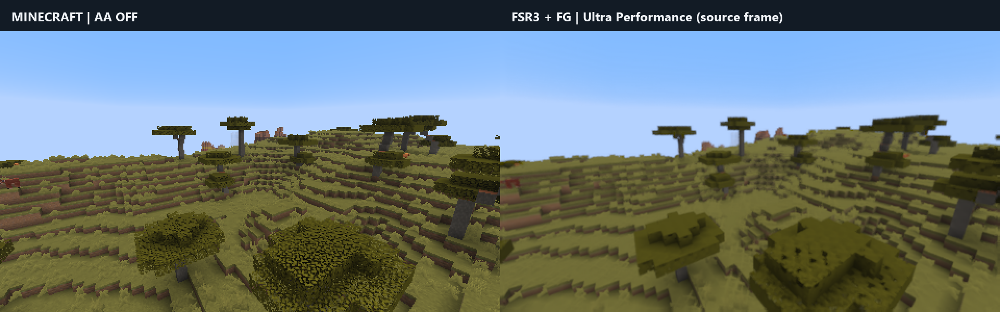
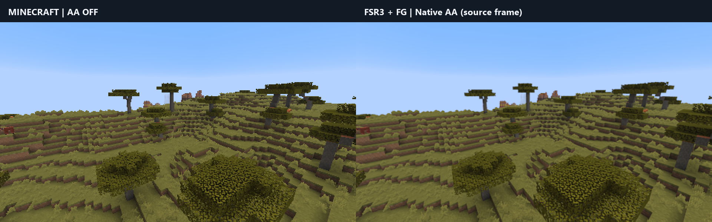